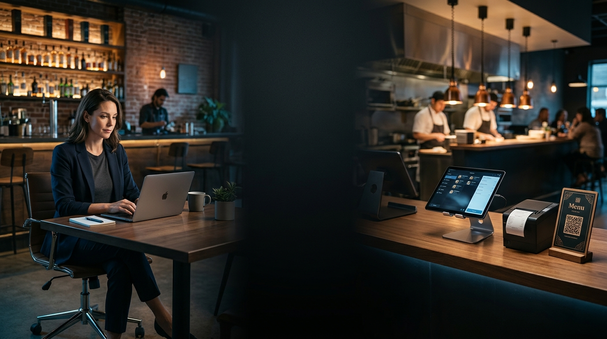

Restaurant Owner Setup Backgrounds
Both images are generated in 16:9 widescreen format, showing the restaurant owner seated in front of their system quickly completing their setup. The center features deep dark negative space so your interactive screencast carousel and timeline remain 100% readable.
Sample 1: Restaurant Entrepreneur at Laptop & Tablet Desk
Left side: Smiling restaurant entrepreneur typing on his laptop with espresso cup in a warm modern dining room. • Right side: Setup tablet and wooden "Scan to Order" QR tent card. • Center: Pitch-black contrast zone.
Set-up Complete Restaurant Profile
in 5 Mins Flat
From an empty smartphone to your first live QR customer order. No sales calls, no hardware shipping, no waiting days for approval.
Restaurant Profile & QR
Quick Menu Setup
Staff Allocation & Roles
Sample 2: Store Manager Workstation & Active Kitchen Counter
Left side: Focused restaurant manager configuring her digital storefront and menu on a workstation laptop. • Right side: Active service counter with POS tablet, receipt printer, and wooden QR stand with kitchen in background. • Center: Charcoal dark contrast space.

Set-up Complete Restaurant Profile
in 5 Mins Flat
From an empty smartphone to your first live QR customer order. No sales calls, no hardware shipping, no waiting days for approval.
Restaurant Profile & QR
Quick Menu Setup
Staff Allocation & Roles